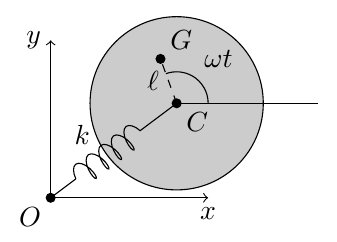
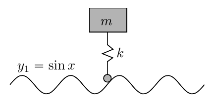

Topic 2: Point Particle Dynamics - Problem Sets
A particle of mass $m$ moves under a force $\mathbf{F} = -c x^3\mathbf{i}$, where $c$ is a positive constant. Find the potential energy function. If the particle starts from rest at $x = -a$, what is its velocity when it reaches $x = 0$? In the subsequent motion, where does it stop again?
Worked Solution [ Click to Expand ]
Reference Frames, Bases and Coordinates
The particle $P$ moves along a fixed straight line, the axis $Ox$ of an inertial frame. The force of the statement depends only on the abscissa, so the problem is one-dimensional and conservative: the answers follow from the potential energy and from the conservation of mechanical energy (Notes.pdf, Sec. 4.5).
| Item | Definition |
|---|---|
| Fixed (inertial) frame | $S_0 = \{O;\ \mathcal B_0\}$, origin at the centre of force $x = 0$ (Notes.pdf, Eq. 2.1) |
| Fixed basis | $\mathcal B_0 = \{\mathbf i, \mathbf j, \mathbf k\}$: $\mathbf i$ along the line of motion, $\mathbf j$ and $\mathbf k$ normal to it, right-handed |
| Moving frames | none: the only basis used is $\mathcal B_0$ |
| Coordinate | $x(t)$, abscissa of $P$ on $Ox$ |
| Applied force | $\mathbf F = -c\,x^3\,\mathbf i$ (statement) |
| Data | $m$ [kg] mass; $c \gt 0$ [kg m$^{-2}$ s$^{-2}$] force constant; $a \gt 0$ [m] release distance |
| Initial conditions | $x(0) = -a$, $\dot x(0) = 0$ (released from rest) |
| Hypotheses | the particle slides on a smooth straight guide along $Ox$ (or moves freely along it); every other force (the weight of a horizontal axis, the reaction of the guide) is normal to $\mathbf i$, with resultant $\mathbf R_\perp = R_y\,\mathbf j + R_z\,\mathbf k$ |
| Constraints | $y = 0$, $z = 0$ (two holonomic, bilateral, smooth constraints) |
| Degrees of freedom | 3 Cartesian coordinates minus 2 constraints leave 1, the coordinate $x$ |
Change of Basis and Position Vector
The view of the figure looks along $\mathbf k$, which points out of the paper (⊙): $\mathbf i$ to the right, $\mathbf j$ up. The particle is drawn at a point of negative abscissa, with the force that pulls it towards $O$.
The problem needs one basis only, $\mathcal B_0$, attached to the inertial frame. The matrix that writes $\mathcal B_0$ in itself has as columns the components of $\mathbf i$, $\mathbf j$, $\mathbf k$ in $\mathcal B_0$, so it is the identity; it is checked like any rotation matrix.
Units: every entry is a direction cosine, dimensionless: $[1]$
Meaning: no rotation is involved; $\mathcal B_0$ is orthonormal and right-handed, and every vector of the problem is written in it.
The basis $\mathcal B_0$ is attached to $S_0$, so its angular velocity relative to $S_0$ is the zero vector.
Units: $[\mathrm{T^{-1}}]$, every component zero
Meaning: the unit vectors of $\mathcal B_0$ are constant, so only the coordinate $x$ changes in time.
Units: $[\mathrm{L}]$
Meaning: $x$ is a signed distance: negative to the left of $O$, where the particle starts.
Kinematics
Units: $[\mathrm{L\,T^{-1}}]$ and $[\mathrm{L\,T^{-2}}]$
Meaning: velocity and acceleration lie along the line of motion; the sign of the rate of $x$ tells the sense of motion.
Forces and Equations of Motion
The free-body diagram shows the applied force along $\mathbf i$ and the resultant $\mathbf R_\perp$ of the forces normal to the axis. No inertia forces appear because $S_0$ is inertial.
Units: $[\mathrm{M}][\mathrm{L\,T^{-2}}] = [\mathrm{M\,L^{-2}\,T^{-2}}][\mathrm{L^3}] = [\mathrm{M\,L\,T^{-2}}]$
Meaning: the force always points towards $O$ (positive for negative $x$, negative for positive $x$) and grows with the cube of the distance; the forces normal to the axis balance each other (the guide carries the weight, if there is one).
The component $F_x(x)$ depends only on $x$, so the elementary work is an exact differential and the potential exists. The reference is taken at the origin.
Units: $[\mathrm{M\,L^{-2}\,T^{-2}}][\mathrm{L^4}] = [\mathrm{M\,L^2\,T^{-2}}]$, an energy
Meaning: an even, convex well with its minimum at $O$, flatter than a parabola near the origin and steeper far from it.
The potential well and the energy level of the release are drawn below; the turning points are where the level meets the curve.
Units: $[\mathrm{M}][\mathrm{L^2\,T^{-2}}] = [\mathrm{M\,L^2\,T^{-2}}]$ for both terms
Meaning: kinetic plus potential energy stays constant; the speed at each position follows from the position alone.
Units: $[\mathrm{M\,L^{-2}\,T^{-2}}][\mathrm{L^4}] = [\mathrm{M\,L^2\,T^{-2}}]$
Meaning: all the energy is potential at the release; it turns into kinetic energy as the particle falls into the well.
Answers and Checks
Sign: at the release the velocity is zero and the force at $x = -a$ is $c\,a^3\,\mathbf i$, along $+\mathbf i$, so the particle starts moving towards positive $x$. The velocity can vanish again only where the kinetic energy vanishes, that is where the potential equals $E_0$, which happens only at $x = \pm a$; between $-a$ and $0$ it cannot change sign, so it is positive at the origin.
Units: $[\mathrm{L^2}]\left([\mathrm{M\,L^{-2}\,T^{-2}}]/[\mathrm{M}]\right)^{1/2} = [\mathrm{L^2}][\mathrm{L^{-1}\,T^{-1}}] = [\mathrm{L\,T^{-1}}]$
Meaning: the origin is the bottom of the well, so the speed there is the largest speed of the motion.
Units: $[\mathrm{L}]$
Meaning: the motion is allowed only where the potential does not exceed $E_0$, the interval from $-a$ to $+a$; the particle stops at $+a$, is pushed back by the force $-c\,a^3\,\mathbf i$ and oscillates periodically between $-a$ and $+a$.
Units: $[\mathrm{L\,T^{-1}}]$
Meaning: the work of the force from $-a$ to $0$ is all converted into kinetic energy, which confirms the result without the potential.
Units: $E_0$ in $[\mathrm{M\,L^2\,T^{-2}}]$, $v_1$ in $[\mathrm{L\,T^{-1}}]$; each limit keeps these dimensions
Meaning: unlike a linear spring (speed proportional to $a$), the cubic force gives a speed at the origin proportional to $a^2$.
| Part of the statement | Answer |
|---|---|
| Potential energy function | $V_0(x) = \tfrac14 c\,x^4$ (plus an arbitrary constant; reference $V_0(0) = 0$) |
| Velocity on reaching $x = 0$ | $\mathbf v_0^P = a^2\sqrt{c/(2m)}\ \mathbf i$ |
| Where it stops again | at $x = +a$; afterwards it oscillates between $-a$ and $+a$ |
Check against the official key: the solution keys of the course (Problems.pdf, p. 72) print no answer for Problem 10: the entry is empty. The results above are checked independently by the integration in the variable $x$ (same speed at the origin), by the factorisation of the turning-point condition and by the limiting cases; a numerical integration of the equation of motion with unit data reproduces the speed 0.7071 m/s at the origin and the stop at plus 1 m.
The potential energy function of a particle of mass $m$ is:
where $c$ and $a$ are positive constants. Sketch this function, and describe the possible types of motion in the three cases:
-
(a)
$E > 0$
-
(b)
$E < -\frac{ca^4}{2}$
-
(c)
$-\frac{ca^4}{2} < E < 0$
Worked Solution [ Click to Expand ]
Reference Frames, Bases and Coordinates
The particle moves along the axis $Ox$ of an inertial frame and its potential energy is given. The study follows the energy method of Notes.pdf, Sec. 4.5 and Notes.pdf, Sec. 4.6 and [Lecture 2, Slide 20]: the force and the equilibrium points come from the derivatives of the potential, the sketch from its extrema and limits, and the types of motion from the allowed regions where the potential does not exceed the mechanical energy.
| Item | Definition |
|---|---|
| Fixed (inertial) frame | $S_0 = \{O;\ \mathcal B_0\}$, origin at the centre of symmetry of the potential (Notes.pdf, Eq. 2.1) |
| Fixed basis | $\mathcal B_0 = \{\mathbf i, \mathbf j, \mathbf k\}$: $\mathbf i$ along the line of motion, $\mathbf j$ and $\mathbf k$ normal to it, right-handed |
| Moving frames | none |
| Coordinate | $x(t)$, abscissa of the particle on $Ox$ |
| Potential energy | $V(x) = -\tfrac{c}{2}\left(x^2 - a^2\right)^2$ (statement; it is the $V_0$ of Notes.pdf) |
| Data | $m$ [kg]; $c \gt 0$ [kg m$^{-2}$ s$^{-2}$]; $a \gt 0$ [m]; $E$ [J], the mechanical energy (constant) |
| Auxiliary symbols | $s = \sqrt{2\lvert E\rvert/c}$ [m$^2$] for negative $E$; $x_{\text{in}} = \sqrt{a^2 - s}$, $x_{\text{out}} = \sqrt{a^2 + s}$ [m] |
| Hypotheses | smooth straight guide along $Ox$ (or free motion along it); every force other than the conservative one is normal to $\mathbf i$, with resultant $\mathbf R_\perp = R_y\,\mathbf j + R_z\,\mathbf k$ |
| Constraints | $y = 0$, $z = 0$ (holonomic, bilateral, smooth) |
| Degrees of freedom | 3 minus 2 constraints leave 1, the coordinate $x$ |
Change of Basis and Position Vector
Only the fixed basis is used. The figure looks along $\mathbf k$, out of the paper (⊙), with $\mathbf i$ to the right and $\mathbf j$ up.
Units: dimensionless entries; $[\mathrm{T^{-1}}]$ for the derivatives, all zero
Meaning: no rotation is involved; only the coordinate $x$ changes in time.
Units: $[\mathrm{L}]$
Meaning: the abscissa is a signed distance from the centre of symmetry of the potential.
Kinematics
Units: $[\mathrm{L\,T^{-1}}]$ and $[\mathrm{L\,T^{-2}}]$
Meaning: both vectors lie on the axis; the sign of the velocity tells the sense of motion.
Forces and Equations of Motion
The free-body diagram of the figure above shows the conservative force along $\mathbf i$ (its sign depends on the position) and the resultant of the normal forces. $S_0$ is inertial: no inertia forces.
Write $u$ for the inner function $x^2 - a^2$, whose derivative is $2x$.
Units: $[\mathrm{M\,L^{-2}\,T^{-2}}][\mathrm{L}][\mathrm{L^2}] = [\mathrm{M\,L\,T^{-2}}]$
Meaning: for $0 \lt x \lt a$ the force is negative (towards the origin) and for $x \gt a$ it is positive (away from it): inside the barriers the force pulls towards $O$, outside them it pushes away from $O$ (symmetrically for negative $x$).
Units: $[\mathrm{M\,L\,T^{-2}}]$ in the equation of motion; $[\mathrm{M\,L^2\,T^{-2}}]$ in the integral
Meaning: the particle can only be where the potential does not exceed $E$; it stops (turning point) where the two are equal.
Units: $[\mathrm{M\,L^{-2}\,T^{-2}}][\mathrm{L^4}] = [\mathrm{M\,L^2\,T^{-2}}]$ for the values of the potential
Meaning: a well of depth $\tfrac12 c\,a^4$ at the origin between two barriers of zero height at $\pm a$.
Units: $[\mathrm{M\,L^2\,T^{-2}}]$
Meaning: the requested sketch: a W turned upside down, a central well bounded by two barrier tops at zero, falling without bound on both sides.
The sketch, with the three energy ranges of the statement drawn as horizontal levels, is the figure below.
For negative $E$ the number $s$ of the table is positive and its square is $-2E/c$.
Units: $[s] = \left([\mathrm{M\,L^2\,T^{-2}}]/[\mathrm{M\,L^{-2}\,T^{-2}}]\right)^{1/2} = [\mathrm{L^2}]$, like $a^2$
Meaning: the outer branch exists for every negative energy; the inner branch needs $a^2 - s$ to be positive, i.e. an energy above the bottom of the well.
Answers and Checks
Units: $[\mathrm{L\,T^{-1}}]$ for the bound on the speed
Meaning: the whole axis is allowed; a particle launched towards the origin crosses the well and both barriers without stopping, and its speed grows without bound as it runs away because the potential falls to minus infinity.
Units: $[x_{\text{out}}] = ([\mathrm{L^2}] + [\mathrm{L^2}])^{1/2} = [\mathrm{L}]$
Meaning: a particle in the right region moving outwards goes straight to $+\infty$; moving inwards it slows down, stops at $x_{\text{out}}$, is pushed outwards and then goes to $+\infty$ (and symmetrically on the left). It can never reach the well.
Units: $[\mathrm{L}]$ for both turning radii
Meaning: which motion happens depends on where the particle starts: inside the well it oscillates for ever about the stable point $x = 0$ (the barriers are higher than its energy); outside it goes to infinity directly or after one reflection.
Write $\xi$ for a small displacement of the particle from the origin, so that its abscissa is $\xi$ itself.
Units: $\left([\mathrm{L^2}][\mathrm{M\,L^{-2}\,T^{-2}}]/[\mathrm{M}]\right)^{1/2} = [\mathrm{T^{-1}}]$
Meaning: at the bottom of the well the oscillation becomes harmonic; at the top ($E$ equal to zero) the turning points reach the unstable equilibria, the separatrix between cases (c) and (a).
| Energy range | Turning points | Allowed region | Possible motions |
|---|---|---|---|
| (a) $E \gt 0$ | none | the whole axis | towards $+\infty$ or $-\infty$, never stopping |
| (b) $E \lt -\tfrac12 c a^4$ | $\pm x_{\text{out}}$ | $\lvert x\rvert \ge x_{\text{out}}$ | towards $\pm\infty$ directly, or reflected once at $\pm x_{\text{out}}$ and then to $\pm\infty$ |
| (c) $-\tfrac12 c a^4 \lt E \lt 0$ | $\pm x_{\text{in}}$, $\pm x_{\text{out}}$ | $\lvert x\rvert \le x_{\text{in}}$ or $\lvert x\rvert \ge x_{\text{out}}$ | oscillation between $-x_{\text{in}}$ and $x_{\text{in}}$; or towards $\pm\infty$ directly or after one reflection |
with $x_{\text{in}}$ and $x_{\text{out}}$ defined in the table of the first section and computed in the turning-point box.
Check against the official key: Problems.pdf, p. 72, item 11, is qualitative: (a) the particle can move towards positive or negative infinity; (b) towards positive or negative infinity directly, or reflected towards positive or negative infinity; (c) the same, or oscillating back and forth. The three cases above agree with it. The derivatives of the potential were also checked by finite differences.
A particle moving under a conservative force oscillates between $x_1$ and $x_2$. Show that the period of oscillation is:
where $V(x)$ is the potential energy function. In particular, if $V(x) = \frac{1}{2}m\omega_0^2(x^2 - bx^4)$, show that the period for oscillations of amplitude $a$ is:
Worked Solution [ Click to Expand ]
Reference Frames, Bases and Coordinates
The particle moves along the axis $Ox$ of an inertial frame under a conservative force, so its mechanical energy is constant and the velocity is a known function of the position. The time between two positions is then a quadrature: this is the method that Notes.pdf, Eq. 4.44 applies to the pendulum and [Lecture 6, Slide 7] to the harmonic oscillator. The second part applies the general formula to an anharmonic potential.
| Item | Definition |
|---|---|
| Fixed (inertial) frame | $S_0 = \{O;\ \mathcal B_0\}$ (Notes.pdf, Eq. 2.1) |
| Fixed basis | $\mathcal B_0 = \{\mathbf i, \mathbf j, \mathbf k\}$: $\mathbf i$ along the line of motion, right-handed |
| Moving frames | none |
| Coordinate | $x(t)$, abscissa on $Ox$ |
| Potential energy | $V(x)$, any smooth function (first part); $V(x) = \tfrac12 m\omega_0^2\left(x^2 - b\,x^4\right)$ (second part) |
| Turning points | $x_1 \lt x_2$: the particle oscillates between them; $E = V(x_1) = V(x_2)$ |
| Data | $m$ [kg]; $\omega_0 \gt 0$ [s$^{-1}$]; $b$ [m$^{-2}$]; amplitude $a \gt 0$ [m] |
| Unknown | $\tau$ [s], the period of the oscillation |
| Hypotheses | smooth guide (or free motion) along $Ox$, other forces normal to $\mathbf i$ with resultant $\mathbf R_\perp = R_y\,\mathbf j + R_z\,\mathbf k$; inside the interval the potential is below $E$; the turning points are simple, $V'(x_1) \lt 0 \lt V'(x_2)$ |
| Constraints | $y = 0$, $z = 0$ (holonomic, bilateral, smooth) |
| Degrees of freedom | 1, the coordinate $x$ |
Change of Basis and Position Vector
Units: dimensionless entries; $[\mathrm{T^{-1}}]$ for the derivatives, all zero
Meaning: the figure looks along $\mathbf k$, out of the paper (⊙); no rotation is involved.
Units: $[\mathrm{L}]$
Meaning: the particle sweeps the segment from $x_1$ to $x_2$ back and forth.
Kinematics
Units: $[\mathrm{L\,T^{-1}}]$, $[\mathrm{L\,T^{-2}}]$ and $[\mathrm{L}]/[\mathrm{L\,T^{-1}}] = [\mathrm{T}]$
Meaning: while the particle moves in one sense, $x$ can be used instead of $t$ as the variable of integration.
Forces and Equations of Motion
The force along $\mathbf i$ is the conservative one; the normal forces balance (figure above; Notes.pdf, Eq. 4.5). $S_0$ is inertial: no inertia forces.
Units: $\left([\mathrm{M\,L^2\,T^{-2}}]/[\mathrm{M}]\right)^{1/2} = [\mathrm{L\,T^{-1}}]$
Meaning: the speed is a known function of the position; only its sign is not given by the energy.
Strictly between the turning points the potential is below $E$, so the speed is positive there and the velocity, being continuous, cannot change sign there.
Units: $[\mathrm{L\,T^{-1}}]$
Meaning: on each leg $x(t)$ is strictly monotonic, so the change of variable from $t$ to $x$ of the kinematics is valid on each leg separately.
Answers and Checks
The particle leaves $x_1$ at the instant $t_A$ and reaches $x_2$ at $t_B$.
Units: $[\mathrm{M}/(\mathrm{M\,L^2\,T^{-2}})]^{1/2}[\mathrm{L}] = [\mathrm{L^{-1}\,T}][\mathrm{L}] = [\mathrm{T}]$
Meaning: each element of length is crossed in the time length over speed; summing them gives the duration of the leg.
The particle leaves $x_2$ at $t_B$ and is back at $x_1$ at $t_C$.
Units: $[\mathrm{T}]$
Meaning: the way back takes as long as the way out: at every point the speed is the same on both legs, only the sense is opposite.
At $t_C$ the particle is again at $x_1$ with zero velocity, the same state as at $t_A$; the equation of motion is of second order, so the same state is followed by the same motion and the time $t_C - t_A$ is the period.
Units: $[\mathrm{T}]$
Meaning: the first formula of the statement is proved; it holds for any potential with two simple turning points.
The integrand is unbounded at $x_2$, where the bracket vanishes. Write $\delta$ for a small positive length and $k_2$ for the positive slope $V'(x_2)$.
Units: $[\mathrm{L}]^{1/2}$ for the last integral, times $[\mathrm{M}/(\mathrm{M\,L\,T^{-2}})]^{1/2} = [\mathrm{L^{-1/2}\,T}]$ gives $[\mathrm{T}]$
Meaning: although the particle stops at the turning points, it spends only a finite time near them; the same holds at $x_1$.
Units: $[b\,a^2] = [\mathrm{L^{-2}}][\mathrm{L^2}] = [1]$
Meaning: for $b$ positive the potential has two maxima at $x^2$ equal to $1/(2b)$; only amplitudes below them give an oscillation. For $b$ zero or negative every amplitude does.
Units: $[\mathrm{T}]$: the integral is a length over a length, dimensionless, and $1/\omega_0$ is a time
Meaning: the second formula of the statement is proved; the factor with $b$ measures how far the oscillation is from harmonic.
For $b$ equal to zero the potential is that of the harmonic oscillator with stiffness $m\omega_0^2$. Substitute $x = a\sin\varphi$: when $x$ runs from $-a$ to $a$, $\varphi$ runs from $-\pi/2$ to $\pi/2$, where $\cos\varphi$ is not negative.
Units: $[\mathrm{T}]$
Meaning: the result of the course for the harmonic oscillator (isochronous: independent of $a$) is recovered.
With the same substitution, $a^2 + x^2$ becomes $a^2(1 + \sin^2\varphi)$. Write $\epsilon$ for $b\,a^2(1 + \sin^2\varphi)$, small when $b\,a^2$ is small.
Units: $[b\,a^2] = [1]$, so $[\tau] = [\mathrm{T}]$
Meaning: for $b$ positive (a softening force, weaker than the linear one far from $O$) the period grows with the amplitude and tends to infinity as $2b\,a^2$ tends to 1, where the turning points reach the maxima of the potential; for $b$ negative (hardening) it decreases.
| Part of the statement | Answer |
|---|---|
| Period for oscillation between $x_1$ and $x_2$ | $\tau = 2\int_{x_1}^{x_2}\sqrt{m/(2[V(x_2) - V(x)])}\,dx$, proved from the energy integral and the two legs |
| Period for $V = \tfrac12 m\omega_0^2(x^2 - b x^4)$, amplitude $a$ | $\tau = \dfrac{2}{\omega_0}\int_{-a}^{a}\dfrac{dx}{\sqrt{a^2 - x^2}\sqrt{1 - b(a^2 + x^2)}}$, valid for $2ba^2 \lt 1$ |
| Checks | $b = 0$ gives $2\pi/\omega_0$; small $ba^2$ gives $\tfrac{2\pi}{\omega_0}(1 + \tfrac34 ba^2)$ |
Check against the official key: Problems.pdf, p. 72, item 12, gives only the hint to separate variables (the two formulas to prove are in the statement), which is the method used above. Independent numerical check with unit values of $\omega_0$ (1 s$^{-1}$) and $b$ (1 m$^{-2}$): the period from the integral of the second formula (Simpson rule in the variable $\varphi$) and the period measured on a Runge-Kutta integration of the equation of motion agree to four decimals, and the first-order estimate is close only for small amplitudes.
| Amplitude $a$ [m] | Integral formula [s] | Integration of the equation of motion [s] | First-order estimate [s] |
|---|---|---|---|
| 0.1 | 6.3309 | 6.3309 | 6.3303 |
| 0.3 | 6.7592 | 6.7592 | 6.7073 |
| 0.5 | 8.0086 | 8.0086 | 7.4613 |
| 0.6 | 9.5549 | 9.5549 | 7.9796 |
A particle of mass $m$ moves along the $Ox$ axis under the potential:
Compute the evolution of the particle as a function of time, when it is released from $x_0 = a$ with an initial velocity $v_0 = \sqrt{8ga}$ directed along the positive $Ox$ axis.
(Tip: $\int \frac{dx}{(x+1)\sqrt{2-x}} = -\frac{2}{\sqrt{3}}\text{arctanh}\left(\sqrt{\frac{2-x}{3}}\right)$).
Worked Solution [ Click to Expand ]
Reference Frames, Bases and Coordinates
A particle of mass $m$ moves along the axis $Ox$ of an inertial frame under a force that derives from the potential of the statement. The motion is one-dimensional, so the mechanical energy is a first integral and the time law follows from one quadrature, as in Notes.pdf, Sec. 4.5 (one-dimensional conservative motion). The integral given in the tip of the statement is used, and it is verified by differentiation before it is used.
| Symbol | Meaning | Units |
|---|---|---|
| $S_0 = \{O;\ \mathbf i, \mathbf j, \mathbf k\}$ | inertial frame; $O$ the origin of the potential; $\mathbf i$ along the axis $Ox$, positive in the sense of the initial velocity | - |
| $m$ | mass of the particle | kg |
| $g$ | positive constant with units of acceleration (it appears in the potential) | m/s$^2$ |
| $a$ | positive length of the potential | m |
| $V(x) = mgx\left[(x/a)^2 - 3\right]$ | potential energy of the statement | J |
| $x(t)$ | coordinate of the particle on $Ox$ (the only degree of freedom) | m |
| $y = x/a$ | dimensionless coordinate | - |
| $x_0 = a$, $\dot x(0) = v_0 = \sqrt{8ga}$ | initial conditions (statement), velocity along $+\mathbf i$ | m, m/s |
| $\mathbf R_\perp = R_y\,\mathbf j + R_z\,\mathbf k$ | resultant of the forces normal to the axis (unknown) | N |
| $E$ | mechanical energy, kinetic plus potential | J |
| $\lambda = \sqrt{3g/(2a)}$ | rate that appears in the time law | 1/s |
| $\alpha = \operatorname{arctanh}(1/\sqrt 3)$ | constant offset of the time law | - |
Hypotheses and degrees of freedom:
- The particle is kept on the axis $Ox$ by a smooth guide (or moves on it freely). The only force with a component along $\mathbf i$ is the conservative force of the potential; any other force (the reaction of a smooth guide, a weight normal to the axis) is perpendicular to $\mathbf i$ and does no work.
- One degree of freedom, the coordinate $x$; the motion is described with the dimensionless coordinate $y$ to simplify the algebra.
- The statement asks for "the evolution of the particle as a function of time": the answer is the function $x(t)$ for every positive time, written in implicit form on each leg of the motion (as the key does) and inverted to one explicit formula.
Change of Basis and Position Vector
Only one basis is needed: $\mathcal B_0$ is fixed in the inertial frame. The boxes below state this as a (trivial) change of basis, give the position vector and the derivatives of the unit vectors from the angular velocity of the basis.
The motion takes place on one fixed straight line, so the basis in which the position is written is the fixed basis itself: every column of the matrix is a fixed unit vector written in $\mathcal B_0$.
Units: $[1]$ for every entry
Meaning: no rotation is involved; every vector of the problem has one component, along $\mathbf i$.
Units: $[\mathrm{L}]$; $y$ is dimensionless
Meaning: the initial position is the point $x = a$, which turns out to be the bottom of the potential well.
The basis $\mathcal B_0$ does not rotate with respect to $S_0$, so its angular velocity is the zero vector.
Units: $[\mathrm{T^{-1}}]$
Meaning: only the coordinate changes in time; the unit vectors are constants.
Kinematics
Units: $[\mathrm{L\,T^{-1}}]$ and $[\mathrm{L\,T^{-2}}]$
Meaning: the velocity and the acceleration lie on the axis; their sign tells the sense of the motion and of the push.
Forces and Equations of Motion
Units: $[\mathrm{M}][\mathrm{L\,T^{-2}}] = [\mathrm{M\,L\,T^{-2}}]$ for the force; $[\mathrm{M}][\mathrm{L\,T^{-2}}][\mathrm{L}] = [\mathrm{M\,L^2\,T^{-2}}]$ for the potential
Meaning: between the points $x = -a$ and $x = a$ the force pushes toward $+\mathbf i$; outside that interval it pushes toward $-\mathbf i$.
Units: $[\mathrm{M\,L^2\,T^{-2}}]$ for every value of the potential
Meaning: the particle starts at the bottom of a well whose left wall ends at the barrier top $x = -a$; to the right the potential grows without bound.
Units: $[\mathrm{T^{-2}}]$ on both sides
Meaning: a non-linear equation of second order; it is integrated once with the energy, then by quadrature.
Units: $[\mathrm{M\,L^2\,T^{-2}}]$
Meaning: the energy equals exactly the height of the barrier: the motion is the separatrix, and the particle can reach the top of the barrier only in the limit of infinite time.
Units: $[\mathrm{T^{-2}}]$ on both sides
Meaning: the allowed region is every $y$ up to 2, past the barrier top too; $x = 2a$ is a simple root (a turning point reached in finite time), while $x = -a$ is a double root: the speed vanishes there, but a particle coming from the right reaches it only as $t \to \infty$, so it never goes beyond it.
Let $u$ be the square root of the quantity $(2 - y)/3$. For $y$ between $-1$ and $2$ it lies between 0 and 1, where the inverse hyperbolic tangent is defined.
Units: dimensionless
Meaning: the tip of the statement is correct on the whole allowed interval of $y$ between $-1$ and $2$.
On this leg the velocity is positive (it starts positive and can change sign only where the right-hand side of the first integral vanishes), and the factor $y + 1$ is positive, so the positive square root is taken. $\lambda$ and $\alpha$ are defined in the table.
Units: $[\lambda\,t] = [\mathrm{T^{-1}}][\mathrm{T}] = [1]$; both sides are dimensionless
Meaning: as time grows the left side decreases from its initial value toward zero: the particle climbs the right wall of the well and slows down.
Units: $\sqrt{[\mathrm{L}]/[\mathrm{L\,T^{-2}}]} = [\mathrm{T}]$
Meaning: the turning point is reached in finite time (simple root), and there the force points toward $-\mathbf i$, so the particle comes back.
After the turning point the velocity is negative, so the negative square root is taken; it cannot change sign again before the next zero of the right-hand side, the double root $y = -1$ (the barrier top), which the boxes below show is approached only as $t \to \infty$.
Units: dimensionless on both sides
Meaning: the left side grows without bound as time grows, which happens only as its argument tends to 1: the particle tends to the barrier top.
Answers and Checks
Units: $[\mathrm{L}]$; the argument of tanh is dimensionless
Meaning: one smooth formula covers the whole motion: out from $x = a$ to $x = 2a$ and back, then toward $x = -a$.
Units: $[\mathrm{L}]$ and $[\mathrm{L\,T^{-1}}]$
Meaning: the formula satisfies the two initial conditions of the statement.
Write $\sigma$ for the argument of tanh, $\lambda t$ minus $\alpha$.
Units: $[\mathrm{T^{-2}}]$
Meaning: the explicit answer has the energy of the motion at every instant; with the initial conditions it is the solution.
Units: $[\mathrm{L}]$ and $[\mathrm{L\,T^{-1}}]$
Meaning: the particle approaches the unstable equilibrium $x = -a$ asymptotically and never crosses it, as the separatrix energy demands; its largest speed is the initial one, reached again at the bottom of the well.
| Part of the statement | Answer |
|---|---|
| Energy of the motion | $E = 2mga$, equal to the barrier top $V(-a)$ (separatrix) |
| Outward leg, $0 \le t \le t_1$ | $\operatorname{arctanh}\sqrt{(2 - y)/3} = -\sqrt{3g/(2a)}\,t + \operatorname{arctanh}(1/\sqrt3)$, with $y = x/a$ |
| Turning point | $x = 2a$ at $t_1 = \sqrt{2a/(3g)}\operatorname{arctanh}(1/\sqrt3) \approx 0.5376\sqrt{a/g}$ |
| Return leg, $t \ge t_1$ | $\operatorname{arctanh}\sqrt{(2 - y)/3} = \sqrt{3g/(2a)}\,t - \operatorname{arctanh}(1/\sqrt3)$ |
| Explicit law, all $t \ge 0$ | $x(t) = a\left[2 - 3\tanh^2\left(\sqrt{3g/(2a)}\,t - \operatorname{arctanh}(1/\sqrt3)\right)\right]$ |
| Long times | $x \to -a$ and $\dot x \to 0$: the particle approaches the unstable equilibrium without reaching it |
Check against the official key: Problems.pdf, p. 72, item 13, gives the two legs in exactly the implicit form of the boxes above, the first one for times up to the turning instant (written there as the square root of $2a/(3g)$ times the arctanh of one over root three, as here) and the second one after it: match (the key does not define $y$; it is read as $x/a$, the only reading that makes its expressions dimensionless). The key also states that "the terminal velocity is" the square root of $8ga$; the warning and the box below explain that this value is the initial and largest speed. A Runge-Kutta integration of the equation of motion with unit values of $g$ and $a$ reproduces the explicit law ($y$ equal to 1.759553 at $t$ equal to 0.3 s, the turning point at 0.537646 s, $y$ equal to -0.683994 at 2 s).
Units: $[\mathrm{L\,T^{-1}}]$
Meaning: the value printed in the key is the peak speed of the motion; the terminal (long-time) speed is zero.
A particle of mass $m$ is moving along the $Ox$ axis under the force $\mathbf{F}(x) = mK x e^{x/a}\mathbf{i}$, where $K$ and $a$ are known positive constants. The initial position of the particle is $x = a$ and the initial velocity is $\mathbf{v} = -v_0\mathbf{i}$. Describe the possible types of motion of the particle as a function of $v_0$.
Worked Solution [ Click to Expand ]
Reference Frames, Bases and Coordinates
The particle moves along the axis $Ox$ of an inertial frame under a force that depends only on its abscissa, so the force is conservative and the mechanical energy is constant. The types of motion follow from the shape of the potential and from the level of the energy fixed by the initial velocity (Notes.pdf, Sec. 4.5 and Notes.pdf, Sec. 4.6; [Lecture 2, Slide 20]).
| Item | Definition |
|---|---|
| Fixed (inertial) frame | $S_0 = \{O;\ \mathcal B_0\}$ (Notes.pdf, Eq. 2.1) |
| Fixed basis | $\mathcal B_0 = \{\mathbf i, \mathbf j, \mathbf k\}$: $\mathbf i$ along the line of motion, right-handed |
| Moving frames | none |
| Coordinate | $x(t)$, abscissa on $Ox$ |
| Applied force | $\mathbf F = m K x\,e^{x/a}\,\mathbf i$ (statement) |
| Data | $m$ [kg]; $K \gt 0$ [s$^{-2}$]; $a \gt 0$ [m]; $v_0 \gt 0$ [m/s] |
| Initial conditions | $x(0) = a$, $\dot x(0) = -v_0$ (towards the origin) |
| Auxiliary symbols | $V(x)$ potential energy (the $V_0$ of Notes.pdf), reference $V(a) = 0$; $E$ mechanical energy; $v_c = a\sqrt{2K}$ critical speed; $x^*$ turning point |
| Hypotheses | smooth guide (or free motion) along $Ox$; other forces normal to $\mathbf i$, with resultant $\mathbf R_\perp = R_y\,\mathbf j + R_z\,\mathbf k$ |
| Constraints | $y = 0$, $z = 0$ (holonomic, bilateral, smooth) |
| Degrees of freedom | 1, the coordinate $x$ |
Change of Basis and Position Vector
Units: dimensionless entries; $[\mathrm{T^{-1}}]$ for the derivatives, all zero
Meaning: the figure looks along $\mathbf k$, out of the paper (⊙); no rotation is involved.
Units: $[\mathrm{L}]$
Meaning: the particle starts at a distance $a$ to the right of $O$.
Kinematics
Units: $[\mathrm{L\,T^{-1}}]$ and $[\mathrm{L\,T^{-2}}]$
Meaning: the particle is launched towards the origin.
Forces and Equations of Motion
The free-body diagram (figure above) shows the applied force along $\mathbf i$, positive for positive $x$ and negative for negative $x$, and the resultant of the normal forces. $S_0$ is inertial: no inertia forces.
Units: $[\mathrm{T^{-2}}][\mathrm{L}] = [\mathrm{L\,T^{-2}}]$; the exponent is dimensionless
Meaning: the force pushes the particle away from the origin on both sides: $O$ is an equilibrium point that repels.
The force depends only on $x$, so the potential exists. The reference is the initial point, $V(a) = 0$. In the integral take the factor $x'$ to differentiate and the exponential to integrate: the exponential is integrated with the substitution of the next rows.
Units: $[\mathrm{M}][\mathrm{T^{-2}}][\mathrm{L}][\mathrm{L}] = [\mathrm{M\,L^2\,T^{-2}}]$, an energy
Meaning: the potential is positive to the left of $a$ and negative to its right; its derivative returns the force of the statement.
Units: $[\mathrm{M\,L^2\,T^{-2}}]$
Meaning: a single barrier of height $mKa^2$ at the origin; to its left the potential stays positive and decays to zero, to its right it falls without bound.
Units: $[\mathrm{L}][\mathrm{T^{-2}}]^{1/2} = [\mathrm{L\,T^{-1}}]$ for the critical speed
Meaning: the particle starts on the right slope, below the barrier top, moving towards it; whether it crosses depends only on the comparison of $v_0$ with $v_c$.
Answers and Checks
On the segment from $0$ to $a$ the potential is continuous and strictly decreasing, from $mKa^2$ down to $0$; the energy lies strictly between these two values, so the potential takes the value $E$ at exactly one point $x^*$ of the segment.
Units: both sides of the turning-point equation are dimensionless
Meaning: the particle decelerates before reaching the origin, is reflected by the barrier and then runs away to the right faster and faster, since the potential falls without bound.
Now the energy equals the barrier top. On the segment from $0$ to $a$ the potential is below $V(0)$ except at $0$, so the velocity stays negative and does not vanish before the origin. Expand the potential about $0$ with the remainder at an intermediate point $\xi$ between $0$ and $x$; since $\xi$ lies between $0$ and $a$, the factor $e^{\xi/a}(1 + \xi/a)$ is at most $2e$.
Units: $[\mathrm{T^{-2}}]^{-1/2} = [\mathrm{T}]$ for the factor in front of the logarithm
Meaning: the particle creeps up to the unstable equilibrium at the barrier top. The linearised equation there, $\ddot x$ equal to $K x$, gives the exponential approach $x$ proportional to $e^{-\sqrt K\,t}$ on the separatrix.
For every $x$ up to $a$ the potential is at most its maximum $V(0)$.
Units: $[\mathrm{L\,T^{-1}}]$
Meaning: the speed never falls below the value at the top, so the abscissa decreases at least linearly in time and the particle goes to minus infinity; far to the left the force vanishes and it recovers its launch speed.
Units: $[\mathrm{L}]$ for the turning point, $[\mathrm{L\,T^{-1}}]$ for $v_c$
Meaning: the three regimes join continuously: the turning point moves from the launch point to the barrier top as the launch speed grows to its critical value.
| Initial speed | Type of motion |
|---|---|
| $v_0 \lt a\sqrt{2K}$ | decelerates, stops at $x^* \in (0, a)$ with $(1 - x^*/a)e^{x^*/a} = v_0^2/(2Ka^2)$, is reflected and moves towards $+\infty$ |
| $v_0 = a\sqrt{2K}$ | approaches the unstable equilibrium $x = 0$ asymptotically: it needs an infinite time to reach it |
| $v_0 \gt a\sqrt{2K}$ | crosses $x = 0$ with speed $\sqrt{v_0^2 - 2Ka^2}$ and moves towards $-\infty$, its speed tending to $v_0$ |
Check against the official key: Problems.pdf, p. 72, item 14 (with the constant written $k$): if the initial speed exceeds $a\sqrt{2k}$ the particle moves towards minus infinity; if it is smaller, the particle moves towards infinity after decelerating before arriving at $x$ equal to zero; if it is equal, it takes an infinite time to reach $x$ equal to zero. The three regimes above agree with it: match. The potential and its derivatives were also checked by finite differences, and the turning point of the example by bisection.
The Stokes' law states that the magnitude of the drag force acting on a sphere of radius $r$ and velocity $v$ moving on a fluid at rest of dynamic viscosity $\mu$ is: $F(v) = 6\pi\mu rv$. Assuming the density of a vertically-falling sphere is twice the density of the fluid ($\rho_0$), and considering drag, the weight, and the buoyancy of the sphere, compute:
-
(a)
The terminal velocity of the sphere.
-
(b)
The evolution of the position as a function of time, if the sphere starts from rest.
Remember that the kinematic viscosity is defined as $\nu = \mu / \rho_0$.
Worked Solution [ Click to Expand ]
Reference Frames, Bases and Coordinates
The sphere is modelled as a point particle $P$ of mass $m$ that falls along a vertical line through a fluid at rest in an inertial frame. Three forces act on it, as the statement imposes: its weight, the buoyancy of the fluid and the Stokes drag. The statement asks for the terminal velocity and for the position as a function of time when the sphere starts from rest (Problems.pdf, p. 9). The axis of the fall points downward, the convention of the official key, so that the velocity component stays positive.
| Item | Definition |
|---|---|
| Fixed (inertial) frame | $S_0 = \{O;\ \mathcal B_0\}$ attached to the fluid at rest, origin $O$ at the release point (Notes.pdf, Eq. 2.1) |
| Fixed basis | $\mathcal B_0 = \{\mathbf i, \mathbf j, \mathbf k\}$: $\mathbf i$ vertical downward, $\mathbf j$ and $\mathbf k$ horizontal, right-handed ($\mathbf i \times \mathbf j = \mathbf k$) |
| Moving frames | none: the only basis used is $\mathcal B_0$ |
| Coordinate | $x(t)$, distance fallen, measured along $\mathbf i$ from $O$; $v = \dot x$ its rate |
| Data | $r$ [m] radius; $\rho_0$ [kg m$^{-3}$] density of the fluid; $\rho_s = 2\rho_0$ density of the sphere; $\mu$ [kg m$^{-1}$ s$^{-1}$] dynamic viscosity; $\nu = \mu/\rho_0$ [m$^2$ s$^{-1}$] kinematic viscosity; $g$ [m s$^{-2}$] gravity |
| Derived data | volume $V = \tfrac43\pi r^3$; mass $m = \rho_s V = \tfrac83\pi\rho_0 r^3$ |
| Applied forces | weight $m g\,\mathbf i$; buoyancy, the weight of the displaced fluid, $-\rho_0 V g\,\mathbf i$; Stokes drag of magnitude $6\pi\mu r v$, opposite to the velocity (statement) |
| Initial conditions | $\mathbf r_0^P(0) = \mathbf 0$, $\mathbf v_0^P(0) = \mathbf 0$ (released from rest at $O$): $x$, $y$, $z$ and their rates are zero at $t = 0$ |
| Hypotheses | the fluid is unbounded and at rest, so the speed in the drag law is the speed of $P$ in $S_0$; the sphere does not rotate or drift sideways; the buoyancy is the hydrostatic one (Archimedes' principle, imposed by the statement, not derived in Notes.pdf); unsteady fluid forces (added mass, history force) are not considered, as the statement gives only the three forces |
| Constraints | none: the sphere is free; the horizontal coordinates stay zero because every force is vertical (proved in the box of Newton's law) |
| Degrees of freedom | 3 (free particle, no constraint); with these forces and the release from rest only $x$ varies, so the motion is rectilinear |
Change of Basis and Position Vector
The only basis is $\mathcal B_0$. In the view of the figure $\mathbf i$ points down the page and $\mathbf j$ to the right, so $\mathbf k$, the cross product of $\mathbf i$ and $\mathbf j$ (right-hand rule), points out of the paper (⊙).
The matrix that writes $\mathcal B_0$ in itself has as columns the components of $\mathbf i$, $\mathbf j$, $\mathbf k$ in $\mathcal B_0$, so it is the identity; it is checked like any rotation matrix.
Units: every entry is a direction cosine, dimensionless: $[1]$
Meaning: no rotation is involved; $\mathcal B_0$ is orthonormal and right-handed even though its first axis points down, and every vector of the problem is written in it.
Units: $[\mathrm{L}]$
Meaning: a single function of time, the distance fallen, describes the whole motion.
Kinematics
Units: $[\mathrm{T^{-1}}]$ for the derivative of the unit vector (zero); $[\mathrm{L\,T^{-1}}]$ for the velocity; $[\mathrm{L\,T^{-2}}]$ for the acceleration
Meaning: velocity and acceleration are vertical; a positive rate of the coordinate means the sphere moves down.
Forces and Equations of Motion
The free-body diagram shows the weight, the buoyancy and the drag, drawn for a sphere that moves down. The sphere is free, so no reaction acts, and $S_0$ is inertial, so no inertia force acts.
The drag points along minus the unit vector of the velocity. The box of the sign of the velocity, below, proves that the velocity component is positive for every positive time, so that unit vector is $\mathbf i$.
Units: $\mathbf F_g$ and $\mathbf F_B$: $[\mathrm{M\,L^{-3}}][\mathrm{L^3}][\mathrm{L\,T^{-2}}] = [\mathrm{M\,L\,T^{-2}}]$; $\mathbf F_D$: $[\mathrm{M\,L^{-3}}][\mathrm{L^2\,T^{-1}}][\mathrm{L}][\mathrm{L\,T^{-1}}] = [\mathrm{M\,L\,T^{-2}}]$
Meaning: the buoyancy cancels half of the weight, because the sphere is twice as dense as the fluid; the drag grows linearly with the speed and opposes the fall.
The sphere is free: the constraint reaction is the zero vector. The general position has horizontal components, which are carried here to show that they stay zero.
Units: $[\mathrm{L^2}][\mathrm{L\,T^{-2}}] = [\mathrm{L^2\,T^{-1}}][\mathrm{L\,T^{-1}}] = [\mathrm{L^2}][\mathrm{L\,T^{-2}}]$, all $[\mathrm{L^3\,T^{-2}}]$; the reaction $\mathbf R$ would be $[\mathrm{M\,L\,T^{-2}}]$
Meaning: one linear equation with constant coefficients for the one unknown; the mass and the fluid density have dropped out, only the radius, the kinematic viscosity and gravity remain, and the effective gravity is half of the real one.
Units: $[\gamma] = [\mathrm{L^2\,T^{-1}}]/[\mathrm{L^2}] = [\mathrm{T^{-1}}]$; $[v_t] = [\mathrm{L^2}][\mathrm{L\,T^{-2}}]/[\mathrm{L^2\,T^{-1}}] = [\mathrm{L\,T^{-1}}]$; the rate equation $[\mathrm{T^{-1}}][\mathrm{L\,T^{-1}}] = [\mathrm{L\,T^{-2}}]$
Meaning: the terminal velocity grows with the square of the radius and falls with the viscosity; the rate constant is the inverse of the time scale on which the speed approaches it.
The drag of the statement is minus its magnitude times the unit vector of the velocity, so for a velocity $v\,\mathbf i$ of either sign it is minus the factor $\tfrac12\rho S C_D$ times $|v|$ times $v$ along $\mathbf i$. The law below uses no assumption on the sign of $v$.
Units: $[\mathrm{L\,T^{-1}}]$ for $v$ and $v_t$; $[\mathrm{L\,T^{-2}}]$ for $g$ and every rate $dv/dt$
Meaning: the ball always falls, so the drag always points up as written in the box of the forces, and the ratio of $v$ to $v_t$ stays inside the interval where the inverse hyperbolic tangent is defined.
Answers and Checks
(a) Terminal velocity
The terminal velocity is the boxed $v_t$ above: the asymptotic state in which drag balances the weight minus the buoyancy.
(b) Position as a function of time
Units: $[\gamma t] = [\mathrm{T^{-1}}][\mathrm{T}] = [1]$; $[v] = [v_t] = [\mathrm{L\,T^{-1}}]$
Meaning: the speed starts at zero and approaches the terminal velocity exponentially; after one time $1/\gamma$ it has reached about 63 % of it.
Units: $[v_t/\gamma] = [\mathrm{L\,T^{-1}}]/[\mathrm{T^{-1}}] = [\mathrm{L}]$; the bracket and $\gamma t$ are dimensionless; $[x] = [\mathrm{L}]$
Meaning: the distance fallen grows first as in a free fall and then linearly at the terminal velocity, with a constant lag of $v_t/\gamma$.
Units: $[\mathrm{L^2}][\mathrm{L\,T^{-2}}]/[\mathrm{L^4\,T^{-2}}] = [\mathrm{L^{-1}}]$ for the prefactor, $[\mathrm{L^2}]$ for each term of the bracket, $[\mathrm{L}]$ for $x$; the exponent is dimensionless
Meaning: the same law as above, written term by term as the key prints it.
Units: $[\mathrm{L\,T^{-2}}][\mathrm{T^2}] = [\mathrm{L}]$ and $[\mathrm{L\,T^{-1}}][\mathrm{T}] = [\mathrm{L}]$
Meaning: at first the drag is negligible and the sphere falls freely under the effective gravity $g/2$ (weight minus buoyancy, over the mass); at long times it falls at the terminal velocity.
| Part of the statement | Answer |
|---|---|
| Equation of motion ($x$ positive downward) | $4r^2\ddot x + 9\nu\dot x = 2r^2 g$ |
| (a) Terminal velocity | $v_t = \dfrac{2r^2 g}{9\nu}$, downward |
| (b) Velocity | $v(t) = v_t\left(1 - e^{-9\nu t/(4r^2)}\right)$ |
| (b) Position, from rest at $O$ | $x(t) = \dfrac{2r^2 g}{81\nu^2}\left[-4r^2 + 4r^2 e^{-9\nu t/(4r^2)} + 9\nu t\right]$ |
Check against the official key: Problems.pdf, p. 73, item 15, takes the axis positive downward and the release from rest at the origin, and prints the equation of motion and the trajectory written in the last two rows of the table, term by term: match. The terminal velocity, not printed in the key, is the slope of that trajectory at long times. A Runge-Kutta integration of the equation of motion with unit values of the radius, the kinematic viscosity and gravity gives a distance of 0.34678 m at the time 2 s, equal to the closed form.
A football has frontal surface area $S$, mass $m$, and a drag coefficient $C_D$. It falls vertically through the air of density $\rho$. It is assumed that the forces acting on the ball are only gravity and drag. The drag can be modeled as: $D = \frac{1}{2}\rho v^2 S C_D$, with $v$ the speed of the ball. Compute its terminal speed and its position as a function of time.
You may find the following integrals useful:
Worked Solution [ Click to Expand ]
Reference Frames, Bases and Coordinates
The football is modelled as a point particle $P$ of mass $m$ that falls along a vertical line through air at rest in an inertial frame. Only two forces act on it, as the statement imposes: its weight and the aerodynamic drag of quadratic law. The statement asks for the terminal speed and for the position as a function of time (Problems.pdf, p. 9). The axis of the fall points downward, the convention of the official key, so that the velocity component stays positive and the drag law needs no absolute value.
| Item | Definition |
|---|---|
| Fixed (inertial) frame | $S_0 = \{O;\ \mathcal B_0\}$ attached to the still air, origin $O$ at the release point (Notes.pdf, Eq. 2.1) |
| Fixed basis | $\mathcal B_0 = \{\mathbf i, \mathbf j, \mathbf k\}$: $\mathbf i$ vertical downward, $\mathbf j$ and $\mathbf k$ horizontal, right-handed |
| Moving frames | none |
| Coordinate | $s(t)$, distance fallen along $\mathbf i$; $v = \dot s$ its rate |
| Data | $m$ [kg] mass; $S$ [m$^2$] frontal area; $C_D$ [-] drag coefficient; $\rho$ [kg m$^{-3}$] density of the air; $g$ [m s$^{-2}$] gravity |
| Applied forces | weight $m g\,\mathbf i$; drag of magnitude $D = \tfrac12\rho v^2 S C_D$ opposite to the velocity (statement) |
| Initial conditions | $\mathbf r_0^P(0) = \mathbf 0$, $\mathbf v_0^P(0) = \mathbf 0$, so $s(0) = 0$ and $v(0) = 0$ (reading of "falls": released from rest, the initial condition of the official key) |
| Given integrals | $\int dx/(x_0^2 - x^2) = \operatorname{atanh}(x/x_0)/x_0$ and $\int\tanh x\,dx = \ln\cosh x$ (statement; both checked below) |
| Hypotheses | the air is unbounded and at rest, so the speed in the drag law is the speed of $P$ in $S_0$; $\rho$, $S$ and $C_D$ are constant; no buoyancy and no lift (statement: only gravity and drag) |
| Constraints | none: the ball is free; the horizontal coordinates stay zero because both forces are vertical (box of Newton's law) |
| Degrees of freedom | 3 (free particle); only $s$ varies (rectilinear fall) |
Change of Basis and Position Vector
The only basis is $\mathcal B_0$. In the view of the figure $\mathbf i$ points down the page and $\mathbf j$ to the right, so $\mathbf k$, the cross product of $\mathbf i$ and $\mathbf j$ (right-hand rule), points out of the paper (⊙).
The matrix that writes $\mathcal B_0$ in itself has as columns the components of $\mathbf i$, $\mathbf j$, $\mathbf k$ in $\mathcal B_0$, so it is the identity; it is checked like any rotation matrix.
Units: every entry is a direction cosine, dimensionless: $[1]$
Meaning: no rotation is involved; $\mathcal B_0$ is orthonormal and right-handed, and the weight has a positive component along its first axis.
Units: $[\mathrm{L}]$
Meaning: a single function of time, the distance fallen from the release point, describes the whole motion.
Kinematics
Units: $[\mathrm{T^{-1}}]$ for the derivative of the unit vector (zero); $[\mathrm{L\,T^{-1}}]$ and $[\mathrm{L\,T^{-2}}]$ for velocity and acceleration
Meaning: velocity and acceleration are vertical; the speed of the ball is the absolute value of $v$, which equals $v$ while the ball falls.
Forces and Equations of Motion
The free-body diagram shows the weight and the drag, drawn for a ball that moves down. The ball is free, so no reaction acts, and $S_0$ is inertial, so no inertia force acts.
The drag points along minus the unit vector of the velocity. The sign box below proves that the velocity component is positive for every positive time, so that unit vector is $\mathbf i$.
Units: $\mathbf F_g$: $[\mathrm{M}][\mathrm{L\,T^{-2}}] = [\mathrm{M\,L\,T^{-2}}]$; $\mathbf F_D$: $[\mathrm{M\,L^{-3}}][\mathrm{L^2}][1][\mathrm{L^2\,T^{-2}}] = [\mathrm{M\,L\,T^{-2}}]$
Meaning: the weight is constant; the drag grows with the square of the speed and points up while the ball falls.
The ball is free: the constraint reaction is the zero vector. In a general motion the drag would be minus the factor $\tfrac12\rho S C_D$ times the speed times the velocity vector, so its horizontal components are proportional to the horizontal rates.
Units: $[\mathrm{L\,T^{-2}}]$ on both sides: $\frac{[\mathrm{M\,L^{-3}}][\mathrm{L^2}]}{[\mathrm{M}]}[\mathrm{L^2\,T^{-2}}] = [\mathrm{L\,T^{-2}}]$; the reaction $\mathbf R$ would be $[\mathrm{M\,L\,T^{-2}}]$
Meaning: one first-order equation for the one unknown $v$; the position follows from a second integration.
Units: $[v_t] = \left(\frac{[\mathrm{M}][\mathrm{L\,T^{-2}}]}{[\mathrm{M\,L^{-3}}][\mathrm{L^2}]}\right)^{1/2} = [\mathrm{L\,T^{-1}}]$; the rate equation $\frac{[\mathrm{L\,T^{-2}}]}{[\mathrm{L^2\,T^{-2}}]}[\mathrm{L^2\,T^{-2}}] = [\mathrm{L\,T^{-2}}]$
Meaning: heavy, small and streamlined balls have a high terminal speed; the acceleration is downward while the speed is below it and vanishes at it.
The constant functions equal to $v_t$ and to minus $v_t$ solve the rate equation (they make the right-hand side vanish). Two different solutions cannot cross, so a solution that starts between them stays between them.
Units: $[\mathrm{L\,T^{-1}}]$ for $v$ and $v_t$; $[\mathrm{L\,T^{-2}}]$ for the initial acceleration
Meaning: the ball always falls, so the drag always points up as written, and the ratio of $v$ to $v_t$ stays inside the interval where the inverse hyperbolic tangent is defined.
Answers and Checks
Terminal speed and velocity as a function of time
Units: both sides have the dimension of the inverse of $x$; $x/x_0$ and $w$ are dimensionless
Meaning: the antiderivative of the statement is correct on the interval where the velocity lives.
Units: $\left[\frac{g\,t}{v_t}\right] = \frac{[\mathrm{L\,T^{-2}}][\mathrm{T}]}{[\mathrm{L\,T^{-1}}]} = [1]$; $[v] = [v_t] = [\mathrm{L\,T^{-1}}]$
Meaning: the velocity starts at zero and tends to the terminal speed without reaching it; the time scale of the approach is $v_t/g$.
Units: $u$ dimensionless, its rate $[\mathrm{T^{-1}}]$; the acceleration $[\mathrm{L\,T^{-2}}]$
Meaning: the second form is the equation of motion itself; the acceleration starts at $g$ and decays to zero.
Position as a function of time
Units: $u$, $\tanh u$ and $\ln\cosh u$ are dimensionless
Meaning: the antiderivative of the statement is correct for every real argument.
Units: $\left[\frac{v_t^2}{g}\right] = \frac{[\mathrm{L^2\,T^{-2}}]}{[\mathrm{L\,T^{-2}}]} = [\mathrm{L}]$, times a dimensionless logarithm; $u$ dimensionless
Meaning: the distance fallen grows first as in free fall and then linearly at the terminal speed; the length scale is $v_t^2/g$.
Units: $[\mathrm{L\,T^{-1}}]$ for the velocities, $[\mathrm{L}]$ for the distances; $u$ and $\ln 2$ dimensionless
Meaning: at first the drag is negligible and the ball falls freely; at late times it falls uniformly at the terminal speed, a constant distance behind a ball that had fallen at that speed from the start.
Units: $\left[\frac{g\,s}{v_t^2}\right] = \frac{[\mathrm{L\,T^{-2}}][\mathrm{L}]}{[\mathrm{L^2\,T^{-2}}]} = [1]$; $w$ and $q$ in $[\mathrm{L^2\,T^{-2}}]$
Meaning: a route that never uses the time gives the same relation between speed and distance as the two time laws, so they are consistent; the work of the drag is what keeps the kinetic energy below the work of the weight.
| Part of the statement | Answer |
|---|---|
| Terminal speed | $v_t = \sqrt{2mg/(\rho S C_D)}$ |
| Velocity (downward) | $v(t) = v_t\tanh(g t/v_t)$ |
| Position (distance fallen from rest at $O$) | $s(t) = (v_t^2/g)\ln\cosh(g t/v_t)$ |
Check against the official key: Problems.pdf, p. 73, item 16, prints the same terminal velocity and, with the release from rest at the origin and the axis positive downward, the same velocity and position laws as the table above: match. A Runge-Kutta integration of the equation of motion with unit gravity and unit terminal speed gives, at the time 1 s, a speed of 0.761594 m/s and a distance of 0.433781 m, the values of the hyperbolic tangent and of the logarithm of the hyperbolic cosine of 1.
A force attracts a heavy particle $M$ of mass $m$ to a point $O$. The attractive force is proportional to the mass of the particle and to the distance $OM$. The proportionality coefficient is $k^2$. The coordinate system $Oxyz$ has the origin at the centre of attraction $O$ and the axis $Oz$ is vertically oriented. Initially, the coordinates of $M$ are:
and its initial velocity is:
-
(a)
Describe the motion of $M$, specifying clearly the shape of the path.
-
(b)
What is the velocity of the particle as a function of $t$?
Worked Solution [ Click to Expand ]
Reference Frames, Bases and Coordinates
The heavy particle $M$ moves freely in space under two forces: the attraction towards the fixed point $O$, proportional to its mass and to the distance with coefficient $k^2$, and its weight. The statement places the origin at the centre of attraction and the axis $Oz$ vertical, and asks for the shape of the path and for the velocity as a function of time (Problems.pdf, p. 9; parts on p. 10).
| Item | Definition |
|---|---|
| Fixed (inertial) frame | $S_0 = \{O;\ \mathcal B_0\}$, origin at the centre of attraction (Notes.pdf, Eq. 2.1) |
| Fixed basis | $\mathcal B_0 = \{\mathbf i, \mathbf j, \mathbf k\}$, $\mathbf k$ vertical upward, $\mathbf i$ and $\mathbf j$ horizontal, right-handed |
| Auxiliary basis (part a) | $\mathcal B_1 = \{\mathbf e_1, \mathbf j, \mathbf e_3\}$, the basis of the plane of the path, obtained from $\mathcal B_0$ by a rotation about $\mathbf j$ (defined in the next section) |
| Coordinates | $x(t)$, $y(t)$, $z(t)$, Cartesian coordinates of $M$ in $S_0$ |
| Data | $m$ [kg] mass; $k$ [s$^{-1}$] so that $k^2$ is in s$^{-2}$; $g$ [m s$^{-2}$] gravity |
| Applied forces | attraction $-m k^2\,\mathbf r_0^M$ (proportional to the mass and to the distance $OM$, towards $O$); weight $-m g\,\mathbf k$ |
| Initial conditions | position $(\sqrt3\,g/k^2,\ 0,\ 0)$; velocity $(0,\ 2g/k,\ 0)$ |
| Hypotheses | "vertically oriented" is read as $\mathbf k$ pointing up, so the weight is $-mg\,\mathbf k$ (the reading of the official key, whose orbit lies below $O$) |
| Constraints | none: the particle is free |
| Degrees of freedom | 3, the three Cartesian coordinates |
Change of Basis and Position Vector
The basis $\mathcal B_0$ needs only the identity check. The auxiliary basis $\mathcal B_1$ is the one in which part (a) reads most simply: its first axis $\mathbf e_1$ lies in the vertical plane $Oxz$, raised by the angle of 30 degrees above $\mathbf i$, and its second axis is $\mathbf j$. The answer of part (a) shows that the path lies in the plane spanned by $\mathbf e_1$ and $\mathbf j$; the basis is built here so that every basis of the problem is defined before the kinematics.
Units: every entry is a direction cosine: $[1]$
Meaning: $\mathcal B_0$ is orthonormal and right-handed, and its unit vectors are constant in $S_0$.
View of the plane $Oxz$ with $\mathbf i$ to the right and $\mathbf k$ up. Since $\mathbf k\times\mathbf i = \mathbf j$, the axis $\mathbf j$ points into the paper (⊗) in this view, and a positive rotation about $\mathbf j$ (right-hand rule, thumb into the paper) is clockwise as seen. The vector $\mathbf e_1$ is $\mathbf i$ turned counterclockwise by 30 degrees, so it is the rotation of Notes.pdf, Eq. 1.19 with the negative angle $\theta_y = -\pi/6$. Its right triangle has hypotenuse 1, adjacent leg $\cos(\pi/6)$ along $\mathbf i$ and opposite leg $\sin(\pi/6)$ along $\mathbf k$. The vector $\mathbf e_3$ is $\mathbf k$ turned by the same angle: its adjacent leg $\cos(\pi/6)$ lies along $\mathbf k$ and its opposite leg $\sin(\pi/6)$ along minus $\mathbf i$, because turning counterclockwise from the upward vertical leans it to the left; that is the origin of the minus sign.
Units: every entry is a direction cosine: $[1]$; the angle $\pi/6$ is in radians, dimensionless
Meaning: the columns are $\mathbf e_1$, $\mathbf j$, $\mathbf e_3$ written in $\mathcal B_0$; $\mathcal B_1$ is a proper rotation of $\mathcal B_0$, and $\mathbf e_3$ will be the normal of the plane of the path.
Units: $[\mathrm{L}]$; $[g/k^2] = [\mathrm{L\,T^{-2}}]/[\mathrm{T^{-2}}] = [\mathrm{L}]$
Meaning: the particle starts on the horizontal axis $Ox$, at the distance $\sqrt3\,g/k^2$ from the centre of attraction.
Kinematics
Units: $[\mathrm{T^{-1}}]$ for the derivatives of the unit vectors (zero); $[\mathrm{L\,T^{-1}}]$, $[\mathrm{L\,T^{-2}}]$; $[g/k] = [\mathrm{L\,T^{-1}}]$
Meaning: the initial velocity is horizontal and perpendicular to the initial position vector.
Forces and Equations of Motion
The free-body diagram shows the attraction towards $O$ and the weight. The particle is free, so no reaction acts, and $S_0$ is inertial, so no inertia force acts.
Units: $[\mathrm{L\,T^{-2}}]$ in every term: $[k^2][\mathrm{L}] = [\mathrm{T^{-2}}][\mathrm{L}]$; the forces $[\mathrm{M}][\mathrm{T^{-2}}][\mathrm{L}] = [\mathrm{M\,L\,T^{-2}}]$
Meaning: three uncoupled harmonic oscillators of angular frequency $k$ (Notes.pdf, Eq. 5.6 with $\omega_0$ equal to $k$); gravity only adds a constant force to the vertical one.
Units: $[\mathrm{L}]$; $[kt] = [\mathrm{T^{-1}}][\mathrm{T}] = [1]$; $p$ in $[\mathrm{T^{-1}}]$
Meaning: seen from above, the particle describes an ellipse of semi-axes $\sqrt3\,g/k^2$ and $2g/k^2$ centred on the vertical through $O$.
Units: $[\mathrm{L}]$
Meaning: the weight shifts the centre of the vertical oscillation to the equilibrium height $-g/k^2$, where the attraction balances the weight; the particle oscillates between the height of $O$ and twice that depth.
Answers and Checks
(a) Shape of the path
Units: every term of the plane in $[\mathrm{L}]$; every term of the sphere in $[\mathrm{L^2}]$; $[R] = [\mathrm{L}]$
Meaning: the plane passes through the centre of the sphere, so the path is a great circle, of radius $2g/k^2$, centred at the equilibrium point $C$ below $O$.
Units: $[\mathrm{L}]$; the trigonometric arguments are dimensionless
Meaning: the particle moves round the circle of centre $C$ and radius $2g/k^2$ in the plane spanned by $\mathbf e_1$ and $\mathbf j$, which is tilted by 30 degrees from the horizontal about $\mathbf j$; it starts at the end of $\mathbf e_1$ and sweeps the angle $kt$ uniformly, once every period $2\pi/k$.
(b) Velocity as a function of time
Units: $[g/k] = [\mathrm{L\,T^{-2}}]/[\mathrm{T^{-1}}] = [\mathrm{L\,T^{-1}}]$
Meaning: the speed is constant: the motion is uniform circular motion; at the start the velocity equals the data $(2g/k)\,\mathbf j$.
Units: every energy term $[\mathrm{M\,L^2\,T^{-2}}]$; the speed $[\mathrm{L\,T^{-1}}]$
Meaning: the force is conservative; on a sphere centred at the equilibrium point the potential energy is constant, so the kinetic energy and the speed are constant, as found by differentiation.
Units: $[\mathrm{L\,T^{-2}}]$ for the accelerations; $[\mathrm{T^{-1}}]$ for the angular rate
Meaning: the resultant of attraction and weight points from $M$ to the centre $C$ and has exactly the centripetal value of the circle; the particle turns at the angular rate $k$.
If gravity is switched off while the initial data keep the same numerical values $X_0$ and $V_0$ (initial distance and initial speed), the vertical oscillation disappears and the horizontal laws remain.
Units: $X_0$ and $V_0/k$ in $[\mathrm{L}]$
Meaning: without weight the linear attraction alone gives the classical centred ellipse; the weight is what moves the centre to $C$ and tilts the plane of the path, which with the given data is a circle.
| Part of the statement | Answer |
|---|---|
| Motion | $\mathbf r_0^M = \frac{\sqrt3 g}{k^2}\cos kt\,\mathbf i + \frac{2g}{k^2}\sin kt\,\mathbf j + \frac{g}{k^2}(\cos kt - 1)\,\mathbf k$ |
| (a) Shape of the path | great circle of centre $C = (0, 0, -g/k^2)$ and radius $2g/k^2$: intersection of the sphere $x^2 + y^2 + (z + g/k^2)^2 = 4g^2/k^4$ with the plane $x - \sqrt3 z = \sqrt3 g/k^2$ (tilted 30 degrees about $\mathbf j$); uniform motion at the angular rate $k$ |
| (b) Velocity | $\mathbf v_0^M = -\frac{\sqrt3 g}{k}\sin kt\,\mathbf i + \frac{2g}{k}\cos kt\,\mathbf j - \frac{g}{k}\sin kt\,\mathbf k$, constant speed $2g/k$ |
Check against the official key: Problems.pdf, p. 73, item 17, prints the same position vector, the same sphere and plane (and notes that other pairs of surfaces describe the same curve) and the same constant speed: match. A Runge-Kutta integration of the three equations with unit values of gravity and of the constant, over one period, keeps the distance to the centre equal to 2 m and the speed equal to 2 m/s within the error of the method.
To understand the vibrations that occur in a turbojet when the mass distribution of the rotor is slightly unbalanced, we can consider the turbojet as a rigid disk of mass $m$ that rotates at a fixed angular velocity $\omega$, with the center of mass $G$ being separated from the geometric center $C$ by a fixed distance [called $\ell$ in the figure]. An elastic restoring force (with constant $k$) tries to keep $C$ at its design position $O$. We call $x_0^G, y_0^G$ the Cartesian coordinates of $G$, and $x_0^C, y_0^C$ the Cartesian coordinates of $C$. Considering the weight of the disk negligible, write down the equation of the dynamics of $G$. Assuming that the homogeneous solution is damped over time and only the particular solution remains, write down the expression of $x_0^G(t)$ and $x_0^C(t)$. Can we affirm that $|\boldsymbol{OC}| > |\boldsymbol{OG}|$ if $\omega > \sqrt{k/m}$?

Worked Solution [ Click to Expand ]
Reference Frames, Bases and Coordinates
The rotor is a rigid disk that turns at the prescribed rate $\omega$ about an axis normal to the plane of the figure. Its geometric centre $C$ is pulled toward the design position $O$ by an elastic force, and its centre of mass $G$ is offset from $C$ by the fixed distance $\ell$. The statement asks for the dynamics of $G$, so $G$ is treated as a point particle of mass $m$ that carries the resultant of the external forces (the particle model of chapter 4 of Notes.pdf; the rotation of the disk is prescribed, so its own dynamics is not needed). The tools are those of chapters 1, 2, 4 and 5 of Notes.pdf and of Lecture 6.
| Symbol | Meaning | Units |
|---|---|---|
| $S_0 = \{O;\ \mathbf i_0, \mathbf j_0, \mathbf k_0\}$ | fixed (inertial) frame; $O$ the design position of $C$; $\mathbf i_0$ the $x$ axis of the figure (right), $\mathbf j_0$ the $y$ axis (up), $\mathbf k_0$ the rotation axis, out of the paper (⊙) | - |
| $S_1 = \{C;\ \mathbf i_1, \mathbf j_1, \mathbf k_0\}$ | frame attached to the disk; $\mathbf i_1$ the unit vector from $C$ to $G$; $\mathbf j_1 = \mathbf k_0 \times \mathbf i_1$ | - |
| $\omega t$ | angle from $\mathbf i_0$ to $\mathbf i_1$, counterclockwise seen with $\mathbf k_0$ ⊙ (figure of the statement) | rad |
| $m$ | mass of the disk | kg |
| $k$ | constant of the elastic restoring force acting on $C$ | N/m |
| $\ell$ | fixed distance from $C$ to $G$ (unbalance) | m |
| $\omega$ | constant angular velocity of the disk | rad/s |
| $\omega_0 = \sqrt{k/m}$ | natural angular frequency of the undamped oscillator (Notes.pdf, Eq. 5.6) | rad/s |
| $(x_0^C, y_0^C)$, $(x_0^G, y_0^G)$ | Cartesian coordinates of $C$ and $G$ in $S_0$ (unknowns) | m |
Hypotheses and degrees of freedom:
- The motion is planar, in the plane $Oxy$; the weight is negligible (statement).
- The elastic force has zero natural length and acts at $C$, directed toward $O$ and proportional to the distance $OC$: the restoring force of Notes.pdf, Eq. 5.1 in two dimensions.
- The motor that keeps the rate $\omega$ constant applies a pure couple; its resultant force is zero, so it does not enter the equation of $G$.
- The disk stays in the plane $Oxy$; whatever holds it there (bearings, guides) can only exert a reaction along $\mathbf k_0$, written as an unknown in Newton's law.
- The orientation of the disk is prescribed (a time-dependent constraint), so the segment $CG$ is known at every instant; the free coordinates are the two coordinates of $C$, or equivalently of $G$: two degrees of freedom.
- The statement assumes that the homogeneous solution dies out in time. This implies a small dissipation that the model does not write down; the answer is the particular (steady) solution.
Change of Basis and Position Vector
In the view along $\mathbf k_0$ (out of the paper, ⊙), the unit vector $\mathbf i_1$ is the hypotenuse (length 1) of a right triangle whose leg adjacent to the angle lies along $\mathbf i_0$ and whose opposite leg lies along $\mathbf j_0$. The vector $\mathbf j_1$ is $\mathbf i_1$ turned a right angle counterclockwise about $\mathbf k_0$ (right-hand rule, thumb out of the paper). Turning the triangle of $\mathbf i_1$ by that right angle sends its adjacent leg to the vertical and its opposite leg to the horizontal pointing toward minus $\mathbf i_0$: this is the origin of the minus sign.
Units: $[1]$ for every entry; $[\omega t] = [\mathrm{T^{-1}}][\mathrm{T}] = [1]$
Meaning: the columns are the disk unit vectors written in the fixed basis; the matrix is the elementary rotation about the $z$ axis of Notes.pdf, Eq. 1.20 with the angle $\omega t$.
The segment from $C$ to $G$ is fixed in the disk, of length $\ell$ along $\mathbf i_1$. In the right triangle with hypotenuse $CG$, the leg adjacent to the angle is horizontal and the opposite leg vertical.
Units: $[\mathrm{L}]$ in every term
Meaning: the centre of mass sits at the geometric centre displaced by the unbalance, which turns with the disk.
Kinematics
As a check, the chain rule on the components gives the same result: the derivative of $\cos\omega t$ is $-\omega\sin\omega t$ and that of $\sin\omega t$ is $\omega\cos\omega t$.
Units: $[\mathrm{T^{-1}}]$
Meaning: the tip of each disk unit vector moves on the unit circle at the rate of the disk, a right angle ahead of the vector.
Units: $[\mathrm{L\,T^{-1}}]$ and $[\mathrm{L}][\mathrm{T^{-1}}]$
Meaning: the centre of mass moves with the geometric centre plus a velocity of magnitude the unbalance times the rate, perpendicular to the segment from $C$ to $G$.
Units: $[\mathrm{L\,T^{-2}}]$ and $[\mathrm{L}][\mathrm{T^{-2}}]$
Meaning: the acceleration of $G$ is that of $C$ plus the centripetal acceleration of the turning unbalance, pointing from $G$ back toward $C$.
Forces and Equations of Motion
The frame $S_0$ is inertial, so no inertia force appears. The weight is neglected and the motor acts through a couple of zero resultant. The elastic force acts at $C$ and points from $C$ toward $O$; the reaction that keeps the disk in its plane is normal to it. The position of $C$ is then written with the position of $G$ (box of the position vectors), so that the unknowns are the coordinates of $G$ only.
Units: $[k][\mathrm{L}] = [\mathrm{M\,T^{-2}}][\mathrm{L}] = [\mathrm{M\,L\,T^{-2}}]$ for $\mathbf F_k$ and each of its terms; $[R_z] = [\mathrm{M\,L\,T^{-2}}]$
Meaning: seen from $G$, the spring acts as a restoring force toward $O$ plus a force of constant magnitude $k\ell$ that turns with the unbalance: the excitation of the rotor.
Units: $[\mathrm{M\,L\,T^{-2}}]$ for the vector equation and for $R_z$; $[\mathrm{L\,T^{-2}}]$ on both sides of the scalar equations; $[\omega_0^2] = [k/m] = [\mathrm{M\,T^{-2}}][\mathrm{M^{-1}}] = [\mathrm{T^{-2}}]$
Meaning: each coordinate of $G$ is an undamped harmonic oscillator of natural frequency $\omega_0$ under a harmonic force at the rate of the disk (Notes.pdf, Eq. 5.32 with zero damping); the two equations are uncoupled, and the plane of motion carries no load.
Answers and Checks
Particular solution for the centre of mass
The homogeneous solution is the free oscillation at $\omega_0$ (Notes.pdf, Eq. 5.7); the statement assumes it has died out. The forcing is harmonic at $\omega$, so the particular solution is sought as the same harmonic with an unknown amplitude, for $\omega \neq \omega_0$.
Units: $[a] = [b] = [\mathrm{T^{-2}}][\mathrm{L}]/[\mathrm{T^{-2}}] = [\mathrm{L}]$, so $x_0^G$, $y_0^G$, $x_h$, $x_p$ and $y_p$ are in $[\mathrm{L}]$; $[\omega_0] = ([\mathrm{M\,T^{-2}}]/[\mathrm{M}])^{1/2} = [\mathrm{T^{-1}}]$; $\omega t$ dimensionless
Meaning: in steady state $G$ describes a circle about $O$ at the rate of the disk, and stays on the line through $O$ along the unbalance direction: the position vector of $G$ is the amplitude times $\mathbf i_1$.
Position of the geometric centre
Units: $[\mathrm{T^{-2}}][\mathrm{L}]/[\mathrm{T^{-2}}] = [\mathrm{L}]$
Meaning: the geometric centre also whirls in a circle about $O$ at the rate of the disk; $O$, $C$ and $G$ stay on one line, the line of $\mathbf i_1$.
Is the distance OC larger than OG above the natural frequency?
Units: $[\mathrm{M}][\mathrm{T^{-2}}]/[\mathrm{M\,T^{-2}}] = [1]$
Meaning: above the natural frequency the amplitude of $G$ has the opposite sign to the unbalance, so $G$ lies between $O$ and $C$: the rotor turns about a point closer to its centre of mass than to its geometric centre. Below it, $C$ lies between $O$ and $G$ and the opposite inequality holds.
At equal rates the trial function solves the homogeneous equation and gives no amplitude. A trial with a factor $t$ is used; the derivatives are written with the product rule and the chain rule.
Units: $[\mathrm{T^{-1}}][\mathrm{L}][\mathrm{T}] = [\mathrm{L}]$
Meaning: at the critical speed the undamped whirl grows linearly in time; the ratio of radii of the previous box is not defined there, so the question concerns the speeds above it.
Limiting cases
Units: $[\mathrm{L}]$
Meaning: a slow rotor turns about its geometric centre, held at the design position; a fast rotor self-centres and turns about its centre of mass, the geometric centre then circling it at the distance of the unbalance. This is the out-of-phase regime of a fast forcing described in Notes.pdf, Eq. 5.47 and the text after it.
Independent check and answers
Units: $[\mathrm{L}]$
Meaning: the forcing on $C$ is the centrifugal effect of the unbalance, of amplitude proportional to the square of the rate; solving for $C$ first and then adding the unbalance gives back the result for $G$.
| Part of the statement | Answer |
|---|---|
| Equation of the dynamics of $G$ | $m\ddot{\mathbf r}_0^G + k\,\mathbf r_0^G = k\ell\,\mathbf i_1$, i.e. $\ddot x_0^G + \omega_0^2 x_0^G = \omega_0^2\ell\cos\omega t$ and $\ddot y_0^G + \omega_0^2 y_0^G = \omega_0^2\ell\sin\omega t$, with $\omega_0 = \sqrt{k/m}$ |
| Steady motion of $G$ ($\omega \ne \omega_0$) | $x_0^G(t) = \dfrac{\omega_0^2\ell}{\omega_0^2 - \omega^2}\cos\omega t$ (and $y_0^G$ with $\sin\omega t$) |
| Steady motion of $C$ | $x_0^C(t) = \dfrac{\omega^2\ell}{\omega_0^2 - \omega^2}\cos\omega t$ (and $y_0^C$ with $\sin\omega t$) |
| Is $\lvert OC\rvert \gt \lvert OG\rvert$ for $\omega \gt \sqrt{k/m}$? | Yes: $\lvert OC\rvert/\lvert OG\rvert = m\omega^2/k \gt 1$; for $\omega \lt \sqrt{k/m}$ the opposite holds, and at $\omega = \sqrt{k/m}$ the undamped response grows without bound |
Check against the official key: Problems.pdf, p. 76, item 45, gives, for a rate different from the natural frequency, the particular solutions of the coordinates of $G$ and $C$ along $\mathbf i_0$ with the same amplitudes as the table above: match. The second components, the ratio of the radii and the answer to the last question follow from them and are not printed in the key. A Runge-Kutta integration of the equation of $G$ with a small added damping (natural frequency 1 rad/s, rate 1.5 rad/s, unbalance 1 m) settles on a circle of radius 0.80 m for $G$ and 1.80 m for $C$, the values of the two formulas.
An airplane is taxiing over a bumpy runway of vertical profile $y_1 = \sin(x)$ with a horizontal velocity $c$. The vertical motion of the airplane can be modeled as that of a heavy particle $P$ of mass $m$ supported on a landing gear of nominal length $L$ when unloaded. Consider that the landing gear has stiffness constant $k$ and negligible damping.

-
(a)
At what taxiing speed is the system in resonance with the bumpy road?
-
(b)
Find the expression of the amplitude of the airplane oscillations when the taxiing velocity $c$ is very high. Hint: the expression depends on $c$.
-
(c)
Consider now that the landing gear has damping constant $\lambda$. How does the results above change? Consider the underdamped, critical, and overdamped cases. What value of $\lambda$ would you choose for this application and why? If the mass of the aircraft changes (e.g. more or less payload), does this affect your conclusion?
Worked Solution [ Click to Expand ]
Reference Frames, Bases and Coordinates
The airplane is modelled as a heavy particle $P$ of mass $m$ carried by a landing gear: a spring of stiffness $k$ and natural length $L$ (and, in part (c), a damper of constant $\lambda$) whose lower end rolls on the runway. The airplane advances at the constant horizontal speed $c$, so the lower end of the gear follows the profile of the runway and moves up and down in time: the vertical motion of $P$ is that of an oscillator excited through its base. The tools are those of chapters 4 and 5 of Notes.pdf and of Lecture 6 (Problems.pdf, p. 31).
| Item | Definition |
|---|---|
| Fixed (inertial) frame | $S_0 = \{O;\ \mathcal B_0\}$ attached to the runway, $O$ on the mean level of the profile, below the position of the wheel at $t = 0$ (Notes.pdf, Eq. 2.1) |
| Fixed basis | $\mathcal B_0 = \{\mathbf i, \mathbf j, \mathbf k\}$: $\mathbf i$ horizontal along the runway in the sense of taxiing, $\mathbf j$ vertical upward, $\mathbf k = \mathbf i\times\mathbf j$ out of the paper (⊙) in the figure |
| Moving frames | none |
| Points | $P$ the airplane; $B$ the lower end of the gear, in contact with the runway |
| Coordinates | $x_P = c\,t$ (prescribed horizontal motion); $y(t)$ height of $P$, the unknown; $y_b(t)$ height of $B$ |
| Profile | $y_1 = h\sin(\kappa x)$ with $h = 1$ m and $\kappa = 1$ rad/m: the statement writes $\sin x$ with lengths in metres, and the two symbols only keep the units visible |
| Data | $m$ [kg]; $k$ [N/m]; $L$ [m]; $c$ [m/s]; $\lambda$ [N s/m] (part c); $g$ [m s$^{-2}$] |
| Derived data | $\Omega = \kappa c$ [rad/s], angular frequency of the excitation; $\omega_0 = \sqrt{k/m}$ [rad/s]; $\gamma = \lambda/(2m)$ [s$^{-1}$] (Notes.pdf, Eq. 5.23) |
| Hypotheses | the wheel is a point that never leaves the runway (the unilateral contact is assumed active); the gear stays vertical, below $P$; the spring and the damper are linear; the gear (spring, damper and wheel) is massless, so the force it exerts on $P$ equals the contact force at $B$; the horizontal speed is constant: the net horizontal force $F_x\,\mathbf i$ (engine thrust, which acts on the airframe, minus the rolling resistance transmitted by the gear) vanishes; gravity acts on $P$ |
| Constraints | $x_P = c\,t$ (prescribed, rheonomic); $z_P = 0$; $B$ on the profile under $P$ |
| Degrees of freedom | 1, the height $y$ |
Change of Basis and Position Vector
Units: every entry is a direction cosine: $[1]$
Meaning: no rotation is involved; the unit vectors of $\mathcal B_0$ are constant in $S_0$.
Units: $[\mathrm{L}]$ for the position vectors, $y$, $y_b$, $h$ and $\ell_s$; $[\kappa c\,t] = [\mathrm{L^{-1}}][\mathrm{L\,T^{-1}}][\mathrm{T}] = [1]$; $[\Omega] = [\mathrm{T^{-1}}]$
Meaning: the wheel rises and falls with the bumps at the angular frequency $\Omega$, which grows with the taxiing speed; the gear is compressed when its length is below $L$.
Kinematics
Units: $[\mathrm{L\,T^{-1}}]$ for $\mathbf v_0^P$, $c$, $\dot y$, $\dot y_b$ and $\dot\ell_s$; $[\mathrm{L\,T^{-2}}]$ for $\mathbf a_0^P$
Meaning: the horizontal motion is uniform, so all the acceleration is vertical; the wheel moves vertically faster when the airplane taxies faster.
Forces and Equations of Motion
The free-body diagram of $P$ shows the weight, the force of the spring and the force of the damper (both along the gear), and the net horizontal force (engine thrust, acting on the airframe, minus the rolling resistance transmitted by the gear). $S_0$ is inertial, so no inertia force acts.
The spring pushes $P$ up when it is compressed (length below $L$) and pulls it down when it is stretched; the damper opposes the rate of change of the length of the gear.
Units: $[\mathrm{M\,L\,T^{-2}}]$ for every force: $[k][\mathrm{L}] = [\mathrm{M\,T^{-2}}][\mathrm{L}]$, $[\lambda][\mathrm{L\,T^{-1}}] = [\mathrm{M\,T^{-1}}][\mathrm{L\,T^{-1}}]$
Meaning: the road acts on the airplane only through the gear: through the spring by the position of the wheel and through the damper by its vertical speed.
Units: $[\mathrm{L\,T^{-2}}]$ for every term of the scalar equation ($[\gamma] = [\Omega] = [\omega_0] = [\mathrm{T^{-1}}]$, $[h] = [\mathrm{L}]$); $[y_e] = [\mathrm{L}]$; $[F_x] = [\mathrm{M\,L\,T^{-2}}]$
Meaning: about its static position the airplane is a damped harmonic oscillator forced at the frequency of the bumps; the weight only lowers the equilibrium by the static deflection $mg/k$.
Answers and Checks
(a) Resonance without damping
With the damping negligible the equation is the undamped one, and the general solution is the free oscillation at $\omega_0$ plus a particular solution at the frequency of the forcing.
Units: $[A] = [\mathrm{T^{-2}}][\mathrm{L}]/[\mathrm{T^{-2}}] = [\mathrm{L}]$; $C_1$, $C_2$ and $z$ in $[\mathrm{L}]$
Meaning: the forced amplitude grows without limit as the frequency of the bumps approaches the natural frequency of the airplane on its gear.
At equal frequencies the trial of the previous box solves the homogeneous equation and fails; the trial with a factor $t$ is used, with the product rule and the chain rule.
Units: $[c_{\text{res}}] = [\mathrm{L}][\mathrm{T^{-1}}] = [\mathrm{L\,T^{-1}}]$; $[D] = [\mathrm{T^{-1}}][\mathrm{L}]$, so $D\,t$ and $z_p$ are in $[\mathrm{L}]$
Meaning: at this speed one bump arrives every natural period of the airplane on its gear, and without damping the oscillation grows linearly in time.
Contact requires the force of the gear on the airplane to stay compressive, that is, to push $P$ upward. Near the undamped resonance the amplitude grows until this condition fails, and from then on the hypothesis of permanent contact breaks down: the wheel would have to pull on the runway.
Units: $[N] = [m g] = [k][\mathrm{L}] = [\lambda][\mathrm{L\,T^{-1}}] = [\mathrm{M\,L\,T^{-2}}]$; $\left[\frac{g}{\omega_0^2}\right] = [\mathrm{L}]$; $\left[\frac{2}{\omega_0 h}\right][\mathrm{L}] = [\mathrm{T}]$
Meaning: the static deflection $m g/k$ is the margin of the contact: while the dynamic compression stays below it the wheel keeps touching the runway; at undamped resonance the growing oscillation exhausts this margin in finite time, so the linear model of part (a) is valid only for the first cycles.
(b) Amplitude at very high taxiing speed
Without damping the free part keeps the amplitude fixed by the initial conditions and does not depend on the speed; the amplitude asked for is that of the forced part.
Units: $\frac{[\mathrm{M\,T^{-2}}][\mathrm{L}]}{[\mathrm{M}][\mathrm{L^{-2}}][\mathrm{L^2\,T^{-2}}]} = [\mathrm{L}]$
Meaning: the airplane cannot follow fast bumps: its forced amplitude decays as the inverse square of the speed and moves in opposition to the road, as a free mass shaken through a soft spring.
(c) Landing gear with damping
Units: $[p] = [\gamma] = [\gamma_\pm] = [\omega] = [\mathrm{T^{-1}}]$; $a$, $A_\pm$, $z_h$ in $[\mathrm{L}]$, $b$ in $[\mathrm{L\,T^{-1}}]$; $[\lambda] = [\sqrt{k m}] = [\mathrm{M\,T^{-1}}]$
Meaning: with any damping the free oscillation dies out: oscillating within the time $1/\gamma$ when underdamped, fastest without oscillation when critical, slowly (time $1/\gamma_-$) when overdamped; afterwards only the forced response remains.
The forcing is the imaginary part of $(\omega_0^2 + 2\mathrm{i}\gamma\Omega)\,h\,e^{\mathrm{i}\Omega t}$, because $\mathrm{Im}\,e^{\mathrm{i}\Omega t} = \sin\Omega t$ and $\mathrm{Im}\,(\mathrm{i}\,e^{\mathrm{i}\Omega t}) = \cos\Omega t$. The complex equation is solved and its imaginary part taken.
Units: $[\omega_0^4] = [\gamma^2\Omega^2] = [\mathrm{T^{-4}}]$, so $H$ is dimensionless and $z_p$, $\tilde z$ are in $[\mathrm{L}]$
Meaning: the steady amplitude is the height of the bumps times the factor $|H|$, finite for every speed; it is the same formula in the three damping regimes, which differ only in the transient.
With the ratios $r = \Omega/\omega_0$ and $\zeta = \gamma/\omega_0$ (notation of this solution; critical damping is $\zeta = 1$) and $u = r^2$, the amplitude factor is a function of $u$ whose derivative is taken with the quotient rule. Unlike the force-driven peak of Notes.pdf, Eq. 5.46, which disappears for $\gamma \ge \omega_0/\sqrt2$, the base-excitation factor $|H|$ keeps a maximum for every damping ($u_p \gt 0$); the analysis of $|H|$ is an extension built with the method of Notes.pdf, Sec. 5.4.
Units: $r$, $\zeta$, $u$, $u_p$ and $|H|$ dimensionless; $[\Omega_p] = [\mathrm{T^{-1}}]$; $\frac{[\mathrm{M\,T^{-1}}]}{[\mathrm{M}][\mathrm{L^{-1}}][\mathrm{L\,T^{-1}}]} = [1]$
Meaning: damping removes the infinite resonance and moves the peak below the natural frequency; below $\sqrt2\,\omega_0$ it reduces the transmitted amplitude, above it increases it, and at very high speed the amplitude decays only as the inverse of the speed, through the force the damper transmits.
Units: every quantity dimensionless
Meaning: the more damping, the lower and flatter the peak; but every curve passes through $|H| = 1$ at $\Omega = \sqrt2\,\omega_0$ and decays more slowly beyond it when the damping is larger.
The choice is a design judgement built on the results above: the critical value kills the transient fastest without oscillation (Notes.pdf, Sec. 5.3.3) and keeps the resonant peak low; more damping would lower the peak only slightly further while transmitting more of the fast bumps. The damper is fixed hardware, so its ratio to the critical value changes with the mass.
Units: $[\lambda_c] = [\mathrm{M\,T^{-1}}]$; $\zeta$ dimensionless; $[c_{\text{res}}] = [\mathrm{L\,T^{-1}}]$; $m$ and $m_{\max}$ in $[\mathrm{M}]$
Meaning: yes, the payload matters: a heavier airplane has a lower resonant speed and a smaller damping ratio. A damper sized at the critical value of the largest mass never lets the transient oscillate; a lighter airplane is then overdamped, with a slower return and somewhat more transmission at high speed, which is the price of never being underdamped.
| Part of the statement | Answer |
|---|---|
| Equation of motion (about the static equilibrium $y_e = L - mg/k$) | $\ddot z + 2\gamma\dot z + \omega_0^2 z = \omega_0^2 h\sin\Omega t + 2\gamma h\Omega\cos\Omega t$, with $\Omega = \kappa c$ |
| (a) Resonant taxiing speed | $c_{\text{res}} = \sqrt{k/m}/\kappa$, numerically $\sqrt{k/m}$ in m/s |
| (b) Amplitude at very high speed (undamped) | $\lvert A\rvert \approx k h/(m\kappa^2 c^2)$, numerically $k/(mc^2)$ in metres, in opposition to the road |
| (c) Transient | underdamped for $\lambda \lt 2\sqrt{km}$, critical for $\lambda = 2\sqrt{km}$, overdamped above; it dies out in the three cases |
| (c) Steady amplitude | $h\lvert H\rvert$, finite for every speed; at $c_{\text{res}}$ it is $h\sqrt{1 + \omega_0^2/(4\gamma^2)}$; peak below $c_{\text{res}}$; equal to $h$ at $\sqrt2\,c_{\text{res}}$; about $\lambda h/(m\kappa c)$ at very high speed |
| (c) Choice of $\lambda$ and payload | critical damping, $\lambda = 2\sqrt{k m_{\max}}$; the payload changes $\zeta$ and $c_{\text{res}}$ as $m^{-1/2}$, so the damper is sized for the heaviest airplane |
Check against the official key: the solution keys of the course (Problems.pdf, p. 76) print no answer for Problem 46: the entry is empty. The results above are checked independently: a Runge-Kutta integration of the damped equation (natural frequency 1.7 rad/s, damping rate 0.3 1/s, excitation 2.3 rad/s, bump height 1 m, 120 s) settles on the amplitude 1.1568 m given by the formula of the amplitude factor; the undamped integration at the resonant frequency grows linearly, as the secular solution predicts; and the maxima of the amplitude factor in the table of numerical values agree with a direct scan of the formula.